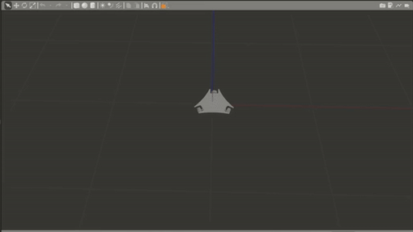
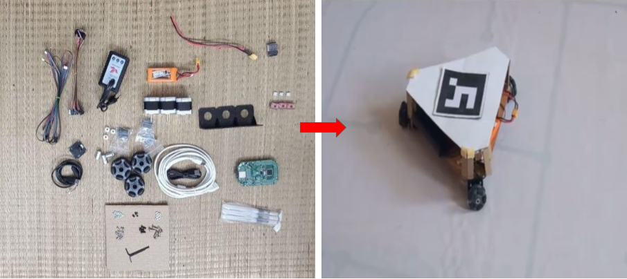
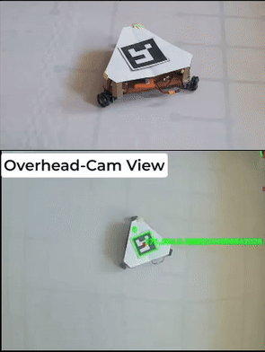
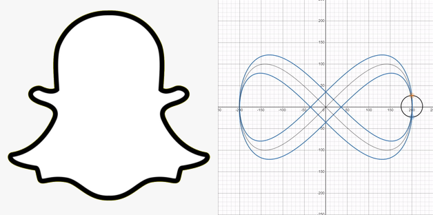
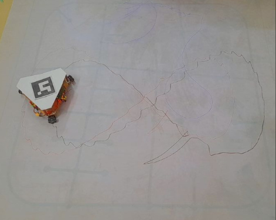

Omni-Wheeled drawing robot
Introduction
The objective of the competition was to design and develop an omni-wheel-based robotic system capable of accurately drawing shapes derived from an image. The competition was structured in multiple stages, with each stage designed to progressively lead to the final task. In the following sections, I will walk through the various tasks that we successfully implemented during the competition.
Steps in the Development of the Omni-Wheel Robot
Simulation
Task 1: Implementing Go-to-Goal Control with Ideal Localization
The first task involved implementing a simple go-to-goal controller to make the simulated robot navigate to a series of desired poses. This was done under the assumption of ideal localization, meaning that the robot's position was directly provided by the simulator (Gazebo). To begin, we first completed the creation of the robot's URDF (Unified Robot Description Format) model. Although the STL file for the robot’s structure was provided, we had to ensure that the URDF accurately described the robot’s geometry, joints, and link configurations. This allowed us to represent the robot correctly in the simulation environment. (Show CAD picture) Next, we implemented a PD (Proportional-Derivative) controller in Python to handle the robot's movement. The PD controller was designed to adjust the robot's velocity based on the error between its current position and the desired goal. This feedback control loop allowed the robot to efficiently reach its target position while minimizing oscillations. (Show GIF) The final step involved interfacing the controller with ROS (Robot Operating System) to facilitate communication with Gazebo. By using ROS topics and messages, we were able to send velocity commands to the robot and receive feedback from the simulator regarding the robot’s position and orientation.
Task 2: Implementing Go-to-Goal Control without Ideal Localization
In the second task, we extended the first task's concept by removing the assumption of ideal localization. This time, we had to calculate the individual wheel velocities based on real-time localization ata, rather than receiving direct position feedback from the simulator. To achieve localization, we implemented a system based on ArUco marker detection. Using OpenCV, we processed the images provided by Gazebo to detect the ArUco markers placed in the environment. The detection of these markers allowed us to estimate the robot's position and orientation relative to the markers, effectively providing real-world localization data. Once we obtained the robot’s pose from the ArUco markers, we integrated this information with the PD controller. The controller then calculated the required linear and angular velocities needed to guide the robot toward the desired goal. However, unlike the first task, where the robot’s movements were directly controlled, we needed to convert these velocities into individual wheel velocities to drive the omni-wheels. To do this, we employed inverse kinematics. Specifically, we used a matrix calculation to map the desired velocities to the individual wheel speeds. This conversion is critical for omni-wheel robots, as it allows for independent control of each wheel, enabling the robot to move in any direction without needing to turn. The matrix calculation used to convert the robot's velocities to wheel velocities is as follows: (Insert matrix picture here) This equation took the robot's desired linear velocity and angular velocity as inputs and provided the required velocity for each of the robot's omni-wheels. The computed wheel velocities were then sent to the motors, allowing the robot to move accordingly. The entire process was integrated into the ROS framework, allowing us to test the system in simulation with Gazebo. We were able to visualize the robot’s path and ensure that it moved smoothly towards the goal, correcting any errors in real-time. The following GIF showcases the robot’s successful execution of the go-to-goal task: (Insert output GIF here)
Task 3: Open-loop control
In the hardware phase, our objective was to bring the robot into the real world and make it move in specific shapes: L, triangle, and circle. This phase involved several key steps, including testing individual components, assembling the hardware, and ensuring communication between the different subsystems. 
Component Testing: We began by testing each component individually to ensure they were working as expected. This initial testing helped us identify and resolve any issues before integrating them into the full system.
Chassis Design and Assembly: After confirming that all components were functional, we moved on to the physical assembly. We designed the chassis and had it laser-cut from an acrylic sheet to ensure precision and durability. The chassis design was made to accommodate all the necessary components such as the motors, sensors, and wiring.
Motor and Microcontroller Integration: We then mounted the motors on the chassis and connected them to the Atmega microcontroller. Establishing communication between the microcontroller and the motors was a critical step in ensuring that we could control the robot’s movement. Once the motors were connected, we verified that they responded correctly to control signals.

Code Implementation: With the hardware assembled, we wrote the control code in Arduino to calculate and send the appropriate wheel velocities to the motors. The code was designed to move the robot in predefined shapes, such as L, triangle, and circle.
Task 4: Implementing Go-to-Goal Control in the Real World
In the task we had to implement go to control in the real world.
Overhead Camera Setup: We began by mounting the overhead camera above the robot to capture its position in the workspace. The camera was connected to the laptop through a very long HDMI cable, ensuring a stable and continuous video feed. This setup allowed us to track the robot's movement and calculate the necessary control inputs for its navigation.
Communication: To facilitate communication between the laptop and the robot, we established wireless communication using an ESP32 module on the robot. The ESP32 served as a bridge between the laptop and the microcontroller, allowing us to transmit control commands wirelessly.
Aruco Marker Detection: The next step was to implement aruco marker detection using the overhead camera’s image feed. We used OpenCV to detect the aruco markers placed on the robot and calculate its position and orientation in the environment. The real-time position data from the camera allowed us to track the robot’s movement with high accuracy.
PID Control for Navigation: Once we had the robot's position, we used a PID controller to calculate the necessary control inputs to drive the robot to its target location. The PID controller adjusted the wheel velocities based on the robot’s current position and the desired goal position, ensuring smooth and precise movement.
Communication with the Microcontroller: The control commands were transmitted from the laptop to the ESP32 over the wireless network. Once received, the ESP32 serially communicated these commands to the Atmega microcontroller on the robot. The Atmega then used the received control commands to adjust the motor speeds, directing the robot's movement towards the desired goal.
Task 5: Drawing the Snapchat Logo and Infinity Symbol
In this task, we were given a picture of the Snapchat logo and tasked with programming the robot to draw it accurately. Additionally, we were required to make the robot draw an infinity symbol. 
Snapchat Logo: To start, we needed to convert the Snapchat logo into a series of discrete waypoints that the robot could follow. This was accomplished using contour detection, a computer vision technique that identifies the boundaries of shapes in an image. The contours of the Snapchat logo were processed to generate a set of waypoints, each representing a position that the robot should move to. These waypoints were fed into the robot's control system one by one, enabling the robot to trace the logo's shape precisely.(Unfortunately, the video showcasing this task in action is lost.)
Infinity Symbol: For the infinity symbol, we took a different approach. Since the infinity symbol can be described by a mathematical function called Lissajous curve, we used this function to generate the path. The mathematical equations for the infinity symbol can be expressed as:
\[ x(t) = 400 \cos(t) \] \[ y(t) = 200 \sin(2t) \] \[ \theta(t) = \frac{\pi}{4} \sin(t) \]
Where \( t \) is the parameter that varies over a defined range, allowing us to plot the infinity symbol. We discretized this function into a set of waypoints, which were then given to the robot to follow, creating the symbol. The below diagram shows our output: 
Pen Mounting: To make the drawings visible, we mounted a pen on the robot. This allowed the robot to physically trace the paths of the Snapchat logo and infinity symbol on a surface, making the shapes visibly clear as the robot moved.